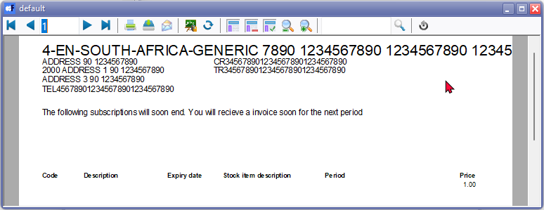
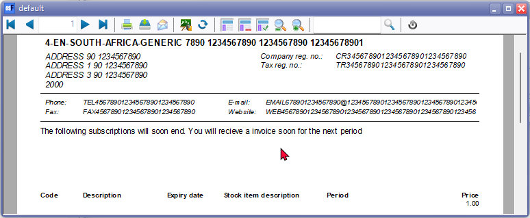
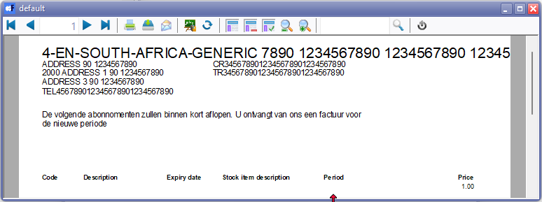
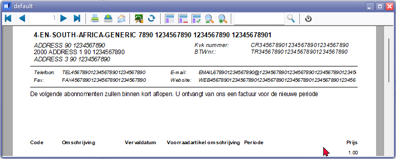
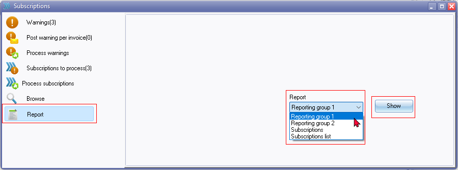
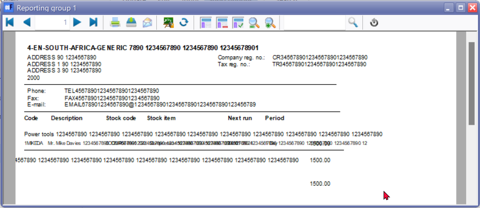
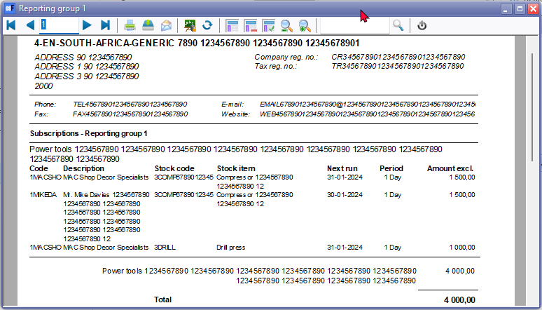
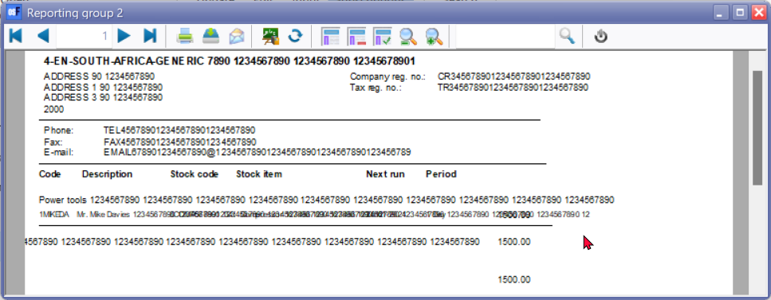
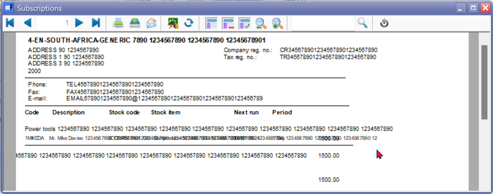
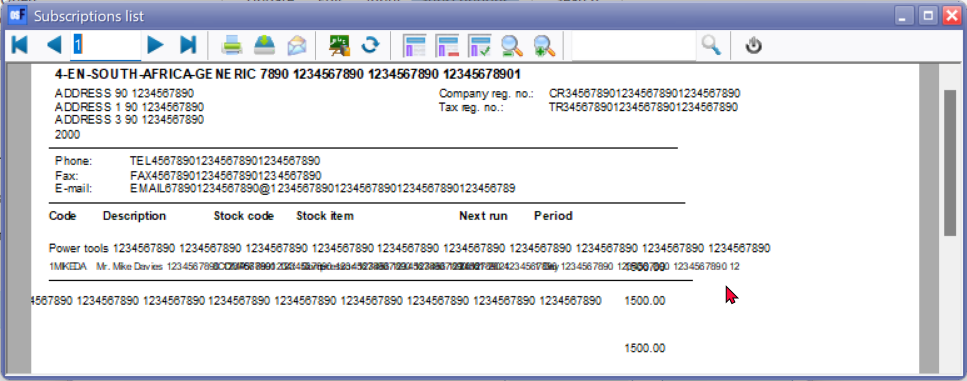

FIXED - Subscriptions - reports
NEW : Reports → Subscriptions - Added in osFinancials5.1.0.193
Menu access : Debtors grid - Context menu - Reports → Subscriptions
Location : ...\plug_ins\reports\REPORTS\DEBTOR\reports\TRN_9061000.rep – Subscriptions
Location on GitHub : osfinancials-development/reports/plug_ins/reports/REPORTS/DEBTOR/reports/LANG_901000.rep at main · Digidanosf/osfinancials-development · GitHub
FIXED
Translated "Bedrag" Static text label TrPExpression19 to include customer language translation Amount Incl. LabelID 651.
CUSTOM('GETTEXTLANG',651,'Amount Incl.',0,0,0)
On this report, these amounts prints inclusive of Tax (VAT/GST/Sales tax), while on other Subscription reports (i.e. "Reporting group1, Reporting group 2, Subscriptions and Subscription list" in the .../plug_ins\reports\REPORTS\SUBSCRIPT folder, the Amounts are printed exclusive of Tax (VAT/GST/Sales tax).
Added Label for Total LabelID 960 to be consistent with other Subscription reports.
Report Header - Standardised Header in line with other reports to accommodate larger field lengths in databases overlapping text.
Report Footer - Standardised Footer in line with other reports to accommodate larger field lengths in databases overlapping text.
Report footer was not printing - Setup page - Two-pass report setting.
Display format : Expression amount format Amount was set to 0.00 – Changed to ###,###,##0.00 to be consistent with document layout files and other reports in the systemreports folder (accessible from Reports menu and userreports folder accessible from the User reports menu on Reports ribbon), etc.
This will also support the required Windows Number format setting when you click on the Print button of the “Budget vs actual” and “This year vs last year” reports.
Subscription plugins layouts
English layout
Location : ...\plug_ins\reports\Subscriptions\en\layouts\default.rep
Location on GitHub : osfinancials-development/reports/plug_ins/reports/Subscriptions/en/layouts/default.rep at main · Digidanosf/osfinancials-development · GitHub
Before fix

After fix

Display format : Expression amount format Amount was set to 0.00 – Changed to ###,###,##0.00 to be consistent with document layout files and other reports in the systemreports folder (accessible from Reports menu and userreports folder accessible from the User reports menu on Reports ribbon), etc.
This will also support the required Windows Number format setting when you click on the Print button of the “Budget vs actual” and “This year vs last year” reports.
Netherlands layout
Location : ...\plug_ins\reports\Subscriptions\nl\layouts\default.rep
Location on GitHub : osfinancials-development/reports/plug_ins/reports/Subscriptions/nl/layouts at main · Digidanosf/osfinancials-development · GitHub
Before fix

After fix

Display format : Expression amount format Amount was set to 0.00 – Changed to ###,###,##0.00 to be consistent with document layout files and other reports in the systemreports folder (accessible from Reports menu and userreports folder accessible from the User reports menu on Reports ribbon), etc.
This will also support the required Windows Number format setting when you click on the Print button of the “Budget vs actual” and “This year vs last year” reports.
Subscriptions plugin reports
Location : ...\plug_ins\reports\REPORTS\SUBSCRIPT
Location on GitHub : osfinancials-development/reports/plug_ins/reports/REPORTS/SUBSCRIPT at main · Digidanosf/osfinancials-development · GitHub
Report print options : Subscriptions on Default ribbon, if activated.

Report names added to output print
|
Report language ID |
Report name |
Added report name to output |
|
LANG_1323 |
Reporting group 1 |
Subscriptions - Reporting group 1 |
|
LANG_1325 |
Reporting group 2 |
Subscriptions - Reporting group 2 |
|
LANG_901000 |
Subscriptions |
Subscriptions |
|
LANG_901001 |
Subscriptions list |
Subscriptions list |
Headers and Footers - Standardised with Empty.rep and all reports
- Headers updated - COMPANYDATA dataset to include Website
- Footers - Two pass report setting
Added Report headings on report output
Display format : Expression amount format Amount was set to 0.00 – Changed to ###,###,##0.00 to be consistent with document layout files and other reports in the systemreports folder (accessible from Reports menu and userreports folder accessible from the User reports menu on Reports ribbon), etc.
This will also support the required Windows Number format setting when you click on the Print button of the “Budget vs actual” and “This year vs last year” reports.
Subscriptions - Reporting group 1
Before fix

After fix

Subscriptions - Reporting group 2
Before fix

After fix

Subscriptions
Before fix

After fix

Subscriptions list
Before fix

After fix